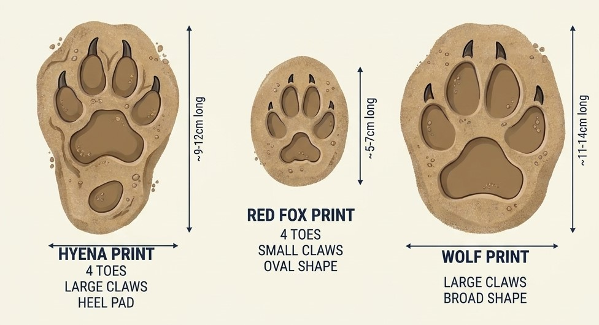
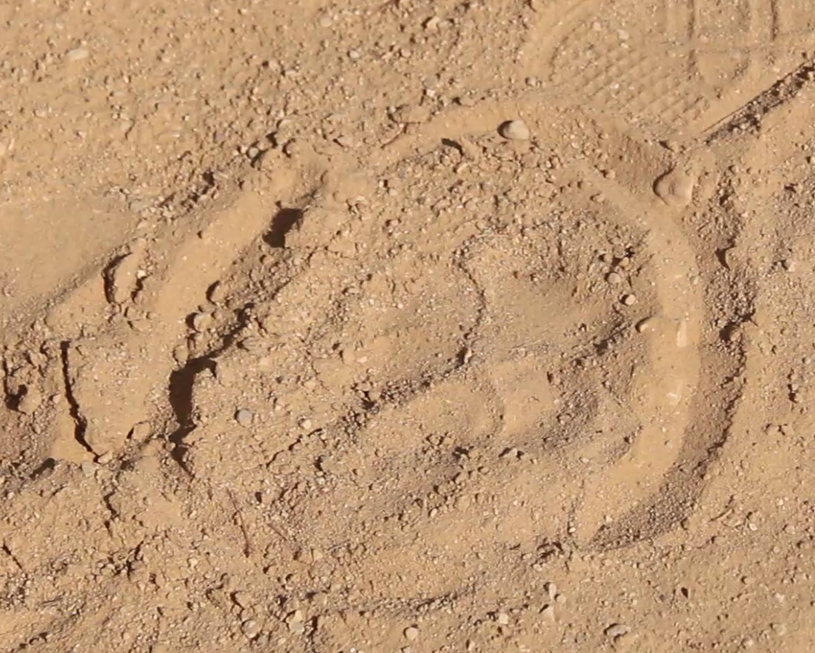
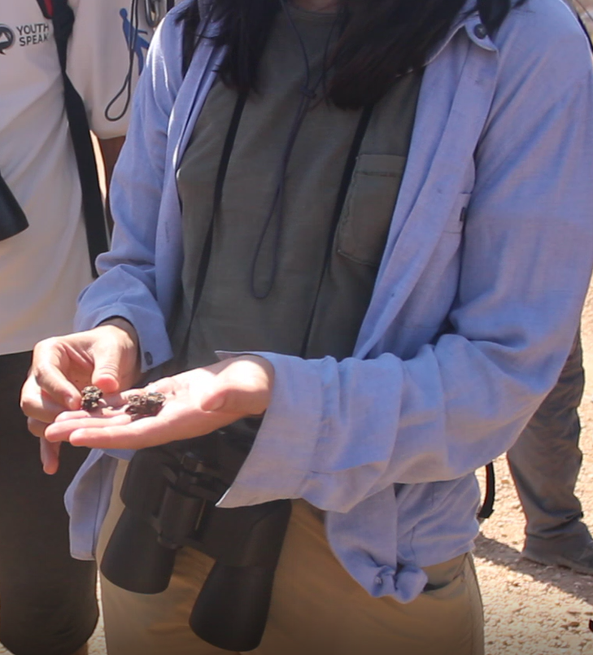
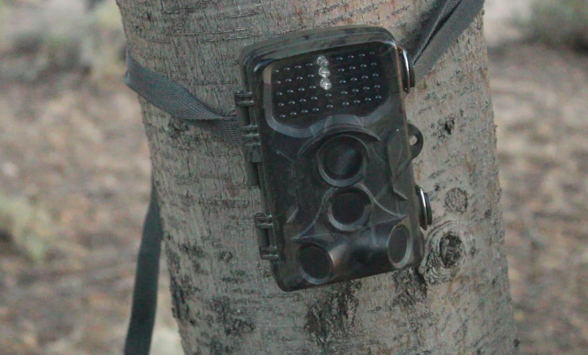

Carnivore Study & Camera Trapping Protocol
Session Lead: Dr. Haithem El-Farhati
Affiliation: .........................
Subject: ...........................
1. Introduction: Why Carnivores are Difficult to Study
Carnivores occupy the top of the food chain, combining cryptic camouflage, highly developed senses (hearing, smell, and vision), and an instinctive fear of humans shaped by thousands of years of evolution. Because their activity is predominantly nocturnal and behavior is easily altered by human presence, traditional direct observation on foot yields poor results, often resulting in hours of effort with no reliable sightings.
2. Field Detection & Trace Identification
In the absence of direct visual contact, researchers rely on indirect evidence left behind in the environment, such as footprints, scats, dens, and prey remains.
Key Diagnostic Features of Traces:
- Footprint Morphology: The size, shape, and claw impressions help distinguish species such as the Red Fox (Vulpes vulpes), Wild Cat, and Striped Hyena (Hyaena hyaena).
- Passage Dynamics: Tracks provide valuable data regarding travel direction, movement speed, approximate age, and timing of activity.

Carnivors footprints

hyena footprint

Carnivor fecal traces detection
3. Camera Trap Technology & Deployment
Camera traps solve the challenge of monitoring elusive wildlife by automatically capturing photos or videos via infrared motion sensors, operating 24 hours a day without disturbing natural behaviors.

Camera trap